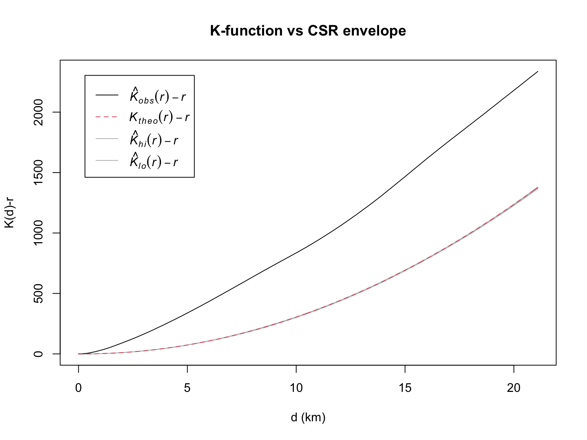

pacman::p_load(sf, spatstat, sparr, terra, tmap, tidyverse)Take-home Exercise 1: Forest-fire Point Patterns in Central Kalimantan
Spatial and spatio-temporal point pattern analysis of fire detections in Kabupaten Pulang Pisau, 2026
1 Overview
Peatland fires are a recurring public-safety problem in Central Kalimantan. Peat fires are hard to put out, they produce haze that spreads across the region, and they damage both health and the local economy. To support prevention and response, this exercise looks at the satellite fire record and asks two basic questions: where do fire detections concentrate, and are they really clustered or just densely scattered.
The study area is one regency, Kabupaten Pulang Pisau, and the data are VIIRS fire detections from 2026. Following the workflow taught in class (r4gdsa Chapters 4-6), the analysis separates first-order effects (how the intensity of detections varies across space) from second-order effects (whether detections interact - cluster, inhibit, or appear random). These two properties are measured with different tools, so they are reported separately.
2 Research questions
- Where does fire-detection intensity concentrate within the regency, and how does it change over the observation period?
- Are the detections significantly clustered compared with a Complete Spatial Randomness (CSR) baseline, rather than only appearing clustered on a map?
- (Value-added) Does the high-intensity area move over the season, and does the clustering hold once the uneven intensity is accounted for?
3 Data and study design
3.1 Data sources
| Dataset | Source | Access date | Coverage |
|---|---|---|---|
| Fire detections, VIIRS 375 m (NOAA-20 / VJ114) | NASA FIRMS, Archive Download | 2026-09-23 | Indonesia; 2026-01-01 to 2026-09-23 |
| Regency boundaries (ADM2) | GADM v4.1 | 2026-09-23 | Indonesia, regency level |
FIRMS returned the export as two files: a standard (science-quality) file for the earlier part of the year and a near-real-time (NRT) file for the recent months that have not been reprocessed yet. Both are read and combined, and a source column is kept so the standard/NRT split can be reported.
3.2 Point event definition
A point event is one VIIRS fire detection - a single 375 m pixel flagged as an active fire at one satellite overpass, placed at the pixel centroid.
One point to be clear about early: a detection is not a distinct fire. A fire that burns for several days is picked up on several overpasses, so the raw file contains the same fire many times. This inflates apparent clustering, so repeated detections are reduced to one point per pixel per day before analysis.
The remaining cleaning steps are routine: drop exact duplicate rows, remove records with missing or impossible coordinates, drop low-confidence detections, and keep only records inside the regency and inside the observation window.
3.3 Spatial study window
The analysis is confined to Kabupaten Pulang Pisau. A single regency is used because it is an administrative unit (so a finding maps onto who would plan or respond), it is dominated by peatland (so the fires belong to a fairly consistent regime), and one regency keeps the point pattern small enough for the distance-based tests. The regency polygon becomes the observation window (owin) for all spatstat steps, so intensity estimates and edge corrections respect the true boundary.
3.4 Temporal study window
The data cover 1 January 2026 to 23 September 2026, the full range available at download. Because 2026 is not over, this is a partial year: it captures the build-up of the dry season but not its later peak around October-November, so seasonal readings are incomplete.
3.5 Assumptions
KDE assumes a smooth underlying intensity surface, and the result depends heavily on the bandwidth, so more than one bandwidth is shown. The K and L functions compare the pattern against a homogeneous Poisson process (constant intensity everywhere). That assumption is almost certainly false here, because fire intensity is driven by where the peatland is, so a homogeneous test can read first-order heterogeneity as clustering. To separate the two, an inhomogeneous L is added as a value-added check. The tests also assume detections are independent, which is exactly what repeated detections break - hence the de-duplication.
3.6 Methodological choices
The projected CRS is EPSG:32749 (UTM zone 49S), which covers Central Kalimantan and gives distances in metres; values are rescaled to kilometres for readability. KDE uses two data-driven bandwidths (bw.diggle, bw.ppl), a fixed bandwidth, and an adaptive estimate. Second-order tests use Ripley’s edge correction and are assessed against Monte Carlo envelopes.
4 Installing and loading R packages
Following Chapters 4-6, the packages used are sf, spatstat, sparr, terra, tmap and tidyverse.
5 Data preparation
5.1 Importing the study area
idn_adm2 <- st_read(dsn = "data/raw", layer = "gadm41_IDN_2")Reading layer `gadm41_IDN_2' from data source
`/Users/mengxinyu/ISSS626-GAA/Take-home_Ex/Take-home_Ex01/data/raw'
using driver `ESRI Shapefile'
Simple feature collection with 502 features and 13 fields
Geometry type: MULTIPOLYGON
Dimension: XY
Bounding box: xmin: 95.00971 ymin: -11.00761 xmax: 141.0194 ymax: 6.076941
Geodetic CRS: WGS 84study_area <- idn_adm2 %>%
filter(NAME_2 == "Pulang Pisau") %>%
st_transform(crs = 32749)
all(st_is_valid(study_area))[1] TRUEtmap_mode("plot")
tm_shape(study_area) + tm_polygons() +
tm_layout(main.title = "Study area: Kabupaten Pulang Pisau")
5.2 Importing and combining the fire detections
The two files disagree on a few column types (for example version is numeric in the standard file and text in the NRT file), so everything is read as text first, stacked, then type_convert() decides the types on the combined table.
fire_archive <- read_csv("data/raw/fire_archive_J1V-C2_811410.csv",
col_types = cols(.default = col_character()))
fire_nrt <- read_csv("data/raw/fire_nrt_J1V-C2_811410.csv",
col_types = cols(.default = col_character()))
fire_raw <- bind_rows(archive = fire_archive, nrt = fire_nrt, .id = "source") %>%
type_convert()
glimpse(fire_raw)Rows: 370,354
Columns: 16
$ source <chr> "archive", "archive", "archive", "archive", "archive", "arc…
$ latitude <dbl> -6.32139, -2.73144, -2.74199, -2.72553, -2.73672, -2.74262,…
$ longitude <dbl> 138.6728, 132.9328, 132.9431, 132.9320, 132.9379, 132.9388,…
$ brightness <dbl> 342.70, 351.49, 354.93, 333.18, 356.28, 355.71, 355.96, 331…
$ scan <dbl> 0.43, 0.48, 0.48, 0.48, 0.48, 0.48, 0.48, 0.39, 0.46, 0.56,…
$ track <dbl> 0.46, 0.65, 0.64, 0.65, 0.65, 0.65, 0.65, 0.36, 0.39, 0.43,…
$ acq_date <date> 2026-01-01, 2026-01-01, 2026-01-01, 2026-01-01, 2026-01-01…
$ acq_time <chr> "0352", "0353", "0353", "0353", "0353", "0353", "0353", "05…
$ satellite <chr> "N20", "N20", "N20", "N20", "N20", "N20", "N20", "N20", "N2…
$ instrument <chr> "VIIRS", "VIIRS", "VIIRS", "VIIRS", "VIIRS", "VIIRS", "VIIR…
$ confidence <chr> "n", "n", "n", "n", "l", "n", "l", "n", "n", "n", "n", "n",…
$ version <chr> "2", "2", "2", "2", "2", "2", "2", "2", "2", "2", "2", "2",…
$ bright_t31 <dbl> 286.85, 288.75, 289.22, 288.10, 289.07, 288.19, 287.82, 295…
$ frp <dbl> 7.55, 14.95, 46.30, 6.35, 14.95, 23.54, 14.95, 1.16, 4.11, …
$ daynight <chr> "D", "D", "D", "D", "D", "D", "D", "D", "D", "D", "D", "D",…
$ type <dbl> 0, 0, 0, 0, 0, 0, 0, 0, 0, 2, 0, 0, 0, 0, 0, 2, 0, 3, 1, 1,…fire_raw %>% count(source)# A tibble: 2 × 2
source n
<chr> <int>
1 archive 35153
2 nrt 3352015.3 Cleaning
fire_clean <- fire_raw %>%
distinct() %>%
filter(!is.na(latitude), !is.na(longitude),
between(latitude, -90, 90), between(longitude, -180, 180)) %>%
filter(confidence %in% c("n", "h")) %>% # VIIRS: keep nominal + high
mutate(acq_date = as.Date(acq_date)) %>%
filter(acq_date >= as.Date("2026-01-01"),
acq_date <= as.Date("2026-09-23")) %>%
mutate(Month_num = month(acq_date),
Month_fac = month(acq_date, label = TRUE, abbr = FALSE))
nrow(fire_raw); nrow(fire_clean)[1] 370354[1] 351822Cleaning drops the national record from 370,354 to 351,822 (removing missing/invalid coordinates and low-confidence detections). Clipping to Pulang Pisau in the next step leaves 16,189 detections.
5.4 Converting to sf and clipping to the regency
Following Chapter 1, the aspatial csv is converted with st_as_sf() and transformed to the projected CRS. Clipping to the regency is done right after, because running anything on the whole-Indonesia file first causes a memory blow-up.
fire_sf <- fire_clean %>%
st_as_sf(coords = c("longitude", "latitude"), crs = 4326) %>%
st_transform(crs = 32749) %>%
st_intersection(study_area)
nrow(fire_sf)[1] 161895.5 Removing repeated detections
fire_dedup <- fire_sf %>%
mutate(x = st_coordinates(.)[, 1],
y = st_coordinates(.)[, 2]) %>%
distinct(x, y, acq_date, .keep_all = TRUE)
nrow(fire_sf); nrow(fire_dedup)[1] 16189[1] 16189Here the per-pixel-per-day rule removes no rows, which means the export contained no exact same-day repeats at identical coordinates.
5.6 Creating the spatstat objects (ppp and owin)
Following Chapter 4, as.ppp() converts the points and as.owin() builds the observation window; the two are then combined and rescaled to kilometres.
fire_ppp <- as.ppp(st_geometry(fire_dedup))
fire_owin <- as.owin(study_area)
Window(fire_ppp) <- fire_owin
# check for coincident points (spatstat needs no exact duplicates)
sum(multiplicity(fire_ppp) > 1)[1] 2fire_ppp <- rjitter(fire_ppp, retry = TRUE, nsim = 1, drop = TRUE)
fire_ppp.km <- rescale.ppp(fire_ppp, 1000, "km")
summary(fire_ppp.km)Planar point pattern: 16189 points
Average intensity 1.661998 points per square km
Coordinates are given to 13 decimal places
Window: polygonal boundary
single connected closed polygon with 843 vertices
enclosing rectangle: [786.3871, 870.7875] x [9616.111, 9829.378] km
(84.4 x 213.3 km)
Window area = 9740.69 square km
Unit of length: 1 km
Fraction of frame area: 0.541plot(fire_ppp.km, main = "Fire detections after cleaning")
Because the pattern has 16,189 points, the Monte Carlo envelopes in the second-order section become very slow. Following the standard practice of testing CSR on a subsample, a reproducible random sample of 3,000 points is drawn and used for the envelope tests only (the first-order KDE below uses all points).
set.seed(1234)
fire_sub <- fire_ppp.km[sample(fire_ppp.km$n, 3000)]
fire_subPlanar point pattern: 3000 points
window: polygonal boundary
enclosing rectangle: [786.3871, 870.7875] x [9616.111, 9829.378] km6 First-order analysis: intensity
6.1 Clark-Evans test
Following Chapter 4, the Clark-Evans test is used first to check whether the pattern is clustered, random, or regular. The Clark-Evans index R is below 1 for clustering and above 1 for regularity.
- H0: the detections are randomly distributed.
- H1: the detections are not randomly distributed.
clarkevans.test(fire_ppp.km, correction = "none",
clipregion = fire_owin,
alternative = "clustered",
method = "MonteCarlo", nsim = 99)
Clark-Evans test
No edge correction
Monte Carlo test based on 99 simulations of CSR with fixed n
data: fire_ppp.km
R = 0.41914, p-value = 0.01
alternative hypothesis: clustered (R < 1)The Monte Carlo Clark-Evans test gives R well below 1 with a very small p-value, so the null of random distribution is rejected: the detections are clustered. This is a first-order signal - it tells us the pattern is not random, and the KDE below shows where the intensity is highest.
6.2 Kernel density with different bandwidths
Following Chapter 4, KDE is computed with density() using two automatic bandwidths and one fixed value, all with a Gaussian kernel and edge correction.
kde_diggle <- density(fire_ppp.km, sigma = bw.diggle, edge = TRUE, kernel = "gaussian")
kde_ppl <- density(fire_ppp.km, sigma = bw.ppl, edge = TRUE, kernel = "gaussian")
kde_fixed <- density(fire_ppp.km, sigma = 2, edge = TRUE, kernel = "gaussian")
par(mfrow = c(1, 3))
plot(kde_diggle, main = "bw.diggle")
plot(kde_ppl, main = "bw.ppl")
plot(kde_fixed, main = "fixed 2 km")
par(mfrow = c(1, 1))6.3 Adaptive KDE
Following Chapter 4.8, an adaptive-bandwidth KDE is added, which is less sensitive to the uneven spread of points than a fixed bandwidth.
kde_adaptive <- adaptive.density(fire_ppp.km, method = "kernel")
plot(kde_adaptive, main = "Adaptive KDE")
6.4 Cartographic-quality KDE map
Following Chapter 4.9, the im output is converted to a SpatRaster with terra::rast(), the CRS is assigned, and the map is drawn with tmap.
kde_terra <- rast(kde_ppl)
crs(kde_terra) <- "EPSG:32749"
tm_shape(kde_terra) +
tm_raster(palette = "YlOrRd", title = "Intensity") +
tm_shape(study_area) + tm_borders(col = "grey30") +
tm_layout(main.title = "Fire-detection intensity", legend.outside = TRUE)
The KDE shows detections concentrated in the central and southern parts of the regency, with little activity in the north. The same hotspot shows up under all three bandwidths, so the location of the peak does not depend on the smoothing choice (the smaller bandwidths just show more local detail). This southern concentration matches the low-lying peatland that dominates that part of Pulang Pisau and burns easily in the dry season. The map shows where intensity is high, not why - it reflects where detections happen, which depends on both fire activity and what the satellite could observe.
7 Second-order analysis: interaction
The four functions below all test the same idea - are detections closer together than random - from different angles, so they are run together and read as a set. Each test uses the 3,000-point subsample and envelope() with rank = 1, glocal = TRUE as in Chapter 5.
For each test:
- H0: the detections are randomly distributed (CSR).
- H1: the detections are not randomly distributed.
- The null is rejected if the observed curve leaves the simulation envelope.
7.1 G-function (nearest-neighbour distances)
G_csr <- envelope(fire_sub, Gest, nsim = 19, rank = 1, glocal = TRUE)Generating 19 simulated realisations of CSR ...
1, 2, 3, 4, 5, 6, 7, 8, 9, 10, 11, 12, 13, 14, 15, 16, 17, 18,
19.
Done.plot(G_csr, main = "G-function vs CSR envelope")
The observed G rises above the envelope, meaning nearest-neighbour distances are shorter than expected under CSR - a sign of clustering.
7.2 F-function (empty-space distances)
F_csr <- envelope(fire_sub, Fest, nsim = 19, rank = 1, glocal = TRUE)Generating 19 simulated realisations of CSR ...
1, 2, 3, 4, 5, 6, 7, 8, 9, 10, 11, 12, 13, 14, 15, 16, 17, 18,
19.
Done.plot(F_csr, main = "F-function vs CSR envelope")
The observed F sits below the envelope, meaning there is more empty space than expected under CSR - again consistent with clustering.
7.3 K-function
K_csr <- envelope(fire_sub, Kest, nsim = 19, rank = 1, glocal = TRUE)Generating 19 simulated realisations of CSR ...
1, 2, [5:52 remaining] 3,
[5:34 remaining] 4, [5:11 remaining] 5, [4:57 remaining] 6,
[4:37 remaining] 7, [4:17 remaining] 8, [3:56 remaining] 9,
[3:35 remaining] 10, [3:12 remaining] 11, [2:51 remaining] 12,
[2:30 remaining] 13, [2:08 remaining] 14, [1:48 remaining] 15,
[1:27 remaining] 16, [1:05 remaining] 17, [43 sec remaining] 18,
[22 sec remaining]
19.
Done.plot(K_csr, . - r ~ r, xlab = "d (km)", ylab = "K(d)-r", main = "K-function vs CSR envelope")
7.4 L-function
The L-function is the clearest of the four because it shows clustering as a function of distance. It is plotted centred, so the CSR baseline is the horizontal line and any curve above it means clustering at that distance.
L_csr <- envelope(fire_sub, Lest, nsim = 19, rank = 1, glocal = TRUE)Generating 19 simulated realisations of CSR ...
1, 2, [6:18 remaining] 3,
[5:48 remaining] 4, [5:21 remaining] 5, [4:56 remaining] 6,
[4:35 remaining] 7, [4:17 remaining] 8, [3:55 remaining] 9,
[3:34 remaining] 10, [3:13 remaining] 11, [2:51 remaining] 12,
[2:30 remaining] 13, [2:09 remaining] 14, [1:47 remaining] 15,
[1:26 remaining] 16, [1:05 remaining] 17, [43 sec remaining] 18,
[22 sec remaining]
19.
Done.plot(L_csr, . - r ~ r, xlab = "d (km)", ylab = "L(d)-r", main = "L-function vs CSR envelope")
The observed L is far above the envelope across the whole distance range up to about 20 km. So the detections are significantly more clustered than CSR at every scale, which is the expected pattern for fires concentrated in a few active areas rather than spread out independently. Together, G, F, K and L all point the same way: clear clustering.
8 Value-added 1: inhomogeneous L-function
This part goes beyond the class methods. The CSR tests above assume intensity is constant, which it is not, so some of the “clustering” they show may just be the hotspots. The inhomogeneous L (Linhom) lets intensity vary and asks whether clustering still remains on top of that.
Linhom_csr <- envelope(fire_sub, Linhom, sigma = bw.ppl,
nsim = 19, rank = 1, glocal = TRUE)Generating 19 simulated realisations of CSR ...
1, 2, [6:29 remaining] 3,
[6:09 remaining] 4, [5:33 remaining] 5, [5:12 remaining] 6,
[4:50 remaining] 7, [4:29 remaining] 8, [4:08 remaining] 9,
[3:48 remaining] 10, [3:24 remaining] 11, [3:02 remaining] 12,
[2:39 remaining] 13, [2:16 remaining] 14, [1:53 remaining] 15,
[1:30 remaining] 16, [1:08 remaining] 17, [45 sec remaining] 18,
[23 sec remaining]
19.
Done.plot(Linhom_csr, . - r ~ r, xlab = "d (km)", ylab = "Linhom(d)-r",
main = "Inhomogeneous L-function")
Once intensity is allowed to vary, the observed curve drops back close to the baseline for most distances instead of sitting far above it. This is the key result: after the hotspots are accounted for, little extra clustering is left, so the strong clustering in the homogeneous L is mostly explained by first-order heterogeneity (the uneven intensity), not by extra interaction between fires. The sharp rise at the largest distance is an edge effect and should not be over-read.
9 Value-added 2: spatio-temporal KDE by month
Following Chapter 6, the STKDE uses the month number as the temporal mark, then spattemp.density() of sparr estimates the density over space and time. This shows whether the busy areas move from month to month rather than staying put.
9.1 Building the marked ppp
fire_month <- fire_dedup %>% select(Month_num)
fire_month_ppp <- as.ppp(fire_month)
fire_month_owin <- fire_month_ppp[fire_owin]
summary(fire_month_owin)Marked planar point pattern: 16189 points
Average intensity 1.661998e-06 points per square unit
*Pattern contains duplicated points*
Coordinates are given to 10 decimal places
marks are numeric, of type 'double'
Summary:
Min. 1st Qu. Median Mean 3rd Qu. Max.
1.000 9.000 9.000 8.781 9.000 9.000
Window: polygonal boundary
single connected closed polygon with 843 vertices
enclosing rectangle: [786387.1, 870787.5] x [9616111, 9829378] units
(84400 x 213300 units)
Window area = 9740690000 square units
Fraction of frame area: 0.5419.2 Computing and plotting the STKDE
st_kde <- spattemp.density(fire_month_owin, lambda = 1.5)
summary(st_kde)Spatiotemporal Kernel Density Estimate
Bandwidths
h = 6421.054 (spatial)
lambda = 1.5 (temporal)
No. of observations
16189
Spatial bound
Type: polygonal
2D enclosure: [786387.1, 870787.5] x [9616111, 9829378]
Temporal bound
[1, 9]
Evaluation
128 x 128 x 9 trivariate lattice
Density range: [2.620588e-23, 2.68829e-10]tims <- c(6, 7, 8, 9)
par(mfcol = c(2, 2))
for (i in tims) {
plot(st_kde, i, override.par = FALSE, fix.range = TRUE,
main = paste("STKDE, month", i))
}
par(mfrow = c(1, 1))The monthly STKDE shows fire activity building up as the dry season advances rather than being spread evenly through the year. The high-density area stays broadly in the central-south peatland across the months rather than moving far, but it gets stronger over time. This adds a temporal side to the static KDE: the same core is at risk throughout, but the risk window is concentrated in a few months, so timing matters as much as location.
10 Integrated findings and discussion
The first-order and second-order results agree. The Clark-Evans test and the KDE show intensity is strongly uneven and concentrated in the central-south peatland. The G, F, K and L functions all confirm the detections are far more clustered than CSR. But the inhomogeneous L shows this clustering mainly reflects the uneven intensity rather than independent interaction between fires - fires are concentrated because the conditions for fire are concentrated. The monthly STKDE adds that this concentration also peaks in time, during the dry season.
As a robustness check, the hotspot location is stable across the three KDE bandwidths, and the homogeneous-vs-inhomogeneous L comparison shows the clustering signal is driven by first-order heterogeneity rather than one modelling choice. Alternative explanations still remain: repeated detections of the same fire, cloud cover and overpass timing, and the fact that detection intensity is not the same as risk to people or assets.
11 Implications for public-safety planning
The results support a targeted rather than uniform approach to fire management in Pulang Pisau. Because detections concentrate in the central and southern peatland, monitoring, patrols and early-response resources can be focused there instead of spread evenly. Because activity peaks in the dry-season months, readiness can be raised ahead of that window and lowered afterwards, which uses limited resources better. The hotspot staying in the same peatland also makes that landscape the priority for longer-term measures such as maintaining water levels and canal blocking, which reduce peat flammability.
Two limits matter. The analysis shows where and when detections concentrate, not why any fire started. And a concentration of detections is not the same as risk to people: turning these patterns into risk would need data on population, settlements and land use around the hotspot. So the findings are best used to focus attention and resources, not to draw causal conclusions.
12 Limitations
Detections are not fires, and some repeated counting may remain even after de-duplication. Cloud cover and overpass timing leave gaps in what the satellite could see, so absence in the record is not the same as absence of fire. A concentration of detections is not by itself a measure of risk without knowing who and what is exposed. The observation window stops in September, so the later dry-season peak is missing. Finally, the CSR and KDE assumptions only partly hold, which is why the results are read against more than one baseline.
13 References
- R Core Team (2026). R: A Language and Environment for Statistical Computing.
- Baddeley, A., Rubak, E., & Turner, R. (2015). Spatial Point Patterns: Methodology and Applications with R. CRC Press.
- Davies, T.M., Marshall, J.C., & Hazelton, M.L. (2018). sparr: Spatial and Spatiotemporal Relative Risk. R package.
- Kam, T.S. R for Geospatial Data Science and Analysis (r4gdsa), Chapters 4-6.
- NASA FIRMS (VIIRS 375 m active-fire product); GADM v4.1.